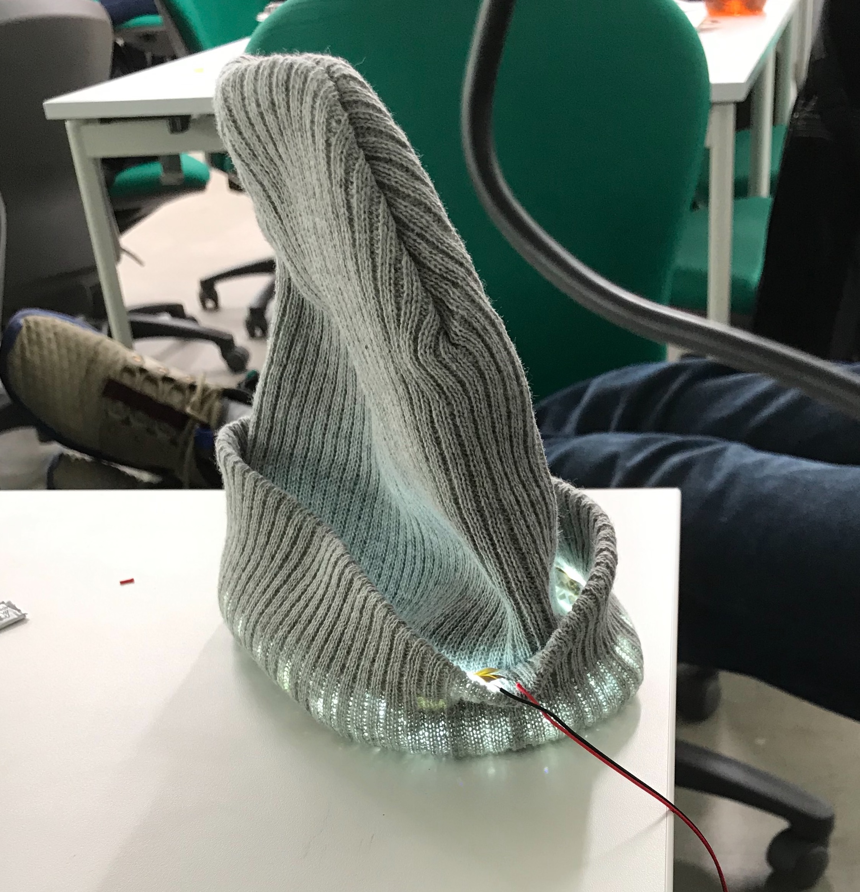

クロステックデザイン演習：Ⅲ
トイ・ハッキング
10月 25日 26日 31日
百均のおもちゃを使って役に立たないものを作る
まずはじめに、百均に売っていたプルバックカーで
役に立たないものを作ろうと思ったが
なかなか思い浮かばなかったので
題材を変更して時計の長針・短針を
それぞれ二つの時計を使って
長針だけの時計と短針だけの時計を
作成しました
なぜこの二つにしたのかというと
時計は視覚情報として長針が分 短針が時間と
分かれている。一般的にその見た目だけで判断することが多い
そこで、長針が二本の時計と短針が二本の時計にした
使用してみて、本当にぱっと見で時間が判断できなかったので
区別の付け方というのは大事なんだなって思いました
長針バージョン

短針バージョン

ゆるゆるさーきっと
micro:bit
アナログのものをマイクロビットにつないで
IOTにするという課題でした
そこで自分たちはLEDのテープを使用してニット帽を光らせる
はじめ多くの色を使用してなんかクラブとかで
パリピ感を出せるようにしようとした
けれど、ループのコードの書き方がわからなかったので
ただ白色に光るだけになってしまった。
けれど、ただテープをそのまま露出させるのではなく
ニット帽の折ったところに隠すようにして
強い光をそのまま出すのではなく、ニットで遮って
柔らかな光にした。できればカラフルに光らせたかった

着用時
アウトプットデバイス/リフレクション
これまでやった課題の中からブラッシュアップして
完成品の作成
自分が選んだ課題は、ソフトウェアネットワーク演習Ⅱの
デジタルプロトタイピングの学校にあったら良いもの
欲しいものをブラッシュアップした
前の授業で自分が作ろうとしたもの
↓
丸テーブルと円形に連結可能なソファ
なぜこの二つにしようとしたのかというと
一般的な授業において
教員と学生の対話的授業を可能にするため
教師と生徒の距離を近くする
空気 雰囲気を作るための空間の作成
だったけれど、
前の授業からの変更点として
丸テーブルをそれぞれに分割できるように
ひし形のテーブルにした
それ以外の変更点として荷物置きとして
下に小さいテーブルを作った
今回はテーブルをメインに作成し直した
椅子は前のデザインを流用した
今回は基本的に椅子と机を同じデータ上に
並べた。
やはり、外観だけ考えていたけど
構造もしっかりと考えて行こうと思う
今回の目標としては、形をしっかりと作ることを
メインにしていたのでそこは満足した
椅子とテーブル レンダリング後 画像